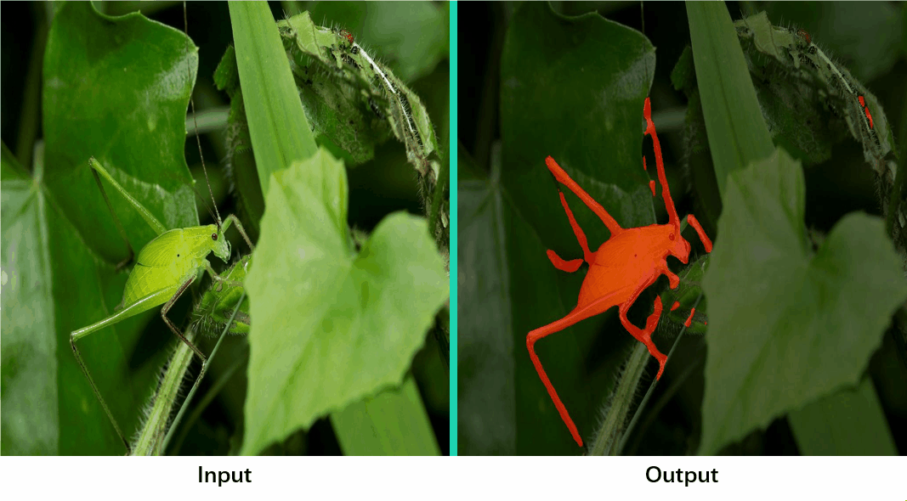

Camouflaged Object Segmentation with Distraction MiningHaiyang Mei1 Ge-Peng Ji2 Ziqi Wei3 Xin Yang1,* Xiaopeng Wei1 Deng-Ping Fan41 Dalian University of Technology 2 Wuhan University 3 Tsinghua University 4 IIAIContact us: xinyang@dlut.edu.cn mhy666@mail.dlut.edu.cn |
|  |
Abstract
Camouflaged object segmentation (COS) aims to identify objects that are ''perfectly'' assimilate into their surroundings, which has a wide range of valuable applications. The key challenge of COS is that there exist high intrinsic similarities between the candidate objects and noise background. In this paper, we strive to embrace challenges towards effective and efficient COS. To this end, we develop a bio-inspired framework, termed Positioning and Focus Network (PFNet), which mimics the process of predation in nature. Specifically, our PFNet contains two key modules, i.e., the positioning module (PM) and the focus module (FM). The PM is designed to mimic the detection process in predation for positioning the potential target objects from a global perspective and the FM is then used to perform the identification process in predation for progressively refining the coarse prediction via focusing on the ambiguous regions. Notably, in the FM, we develop a novel distraction mining strategy for the distraction region discovery and removal, to benefit the performance of estimation. Extensive experiments demonstrate that our PFNet runs in real-time (72 FPS) and significantly outperforms 18 cutting-edge models on three challenging benchmark datasets under four standard metrics. The code will be made publicly available.
PFNet
Visual Results
Downloads
| Paper | : [ PFNet.pdf ] |
| Experimental results | : [ Results.zip ] |
| Pre-trained model. | : [ PFNet.pth ] |
| Source Code. | : [ Code ] |
Dataset
BibTex